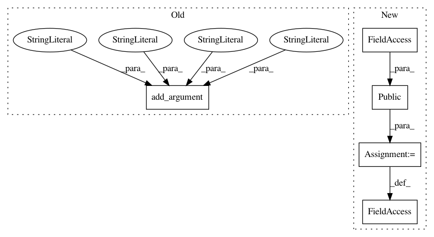

29db4abdbeb839340ac5b0caf934ebda93892934,cnvlib/commands.py,,,#,1035
Before Change
P_metrics = AP_subparsers.add_parser("metrics", help=_cmd_metrics.__doc__)
P_metrics.add_argument("cnarrays", nargs="+",
help=One or more bin-level coverage data files (*.cnn, *.cnr).)
P_metrics.add_argument("-s", "--segments", nargs="+",
help=One or more segmentation data files (*.cns, output of the
"segment" command). If more than one file is given, the number
must match the coverage data files, in which case the input
files will be paired together in the given order. Otherwise, the
same segments will be used for all coverage files.)
P_metrics.add_argument("--drop-low-coverage", action="store_true",
help=Drop very-low-coverage bins before calculations to reduce
negative "fat tail" of bin log2 values in poor-quality
tumor samples.)
After Change
// Shims
AP_subparsers._name_parser_map["gender"] = P_sex
do_gender = public(do_sex)
// metrics ---------------------------------------------------------------------
In pattern: SUPERPATTERN
Frequency: 3
Non-data size: 5
Instances
Project Name: etal/cnvkit
Commit Name: 29db4abdbeb839340ac5b0caf934ebda93892934
Time: 2017-02-24
Author: eric.talevich@gmail.com
File Name: cnvlib/commands.py
Class Name:
Method Name:
Project Name: etal/cnvkit
Commit Name: 29db4abdbeb839340ac5b0caf934ebda93892934
Time: 2017-02-24
Author: eric.talevich@gmail.com
File Name: cnvlib/commands.py
Class Name:
Method Name:
Project Name: etal/cnvkit
Commit Name: 29db4abdbeb839340ac5b0caf934ebda93892934
Time: 2017-02-24
Author: eric.talevich@gmail.com
File Name: cnvlib/commands.py
Class Name:
Method Name: